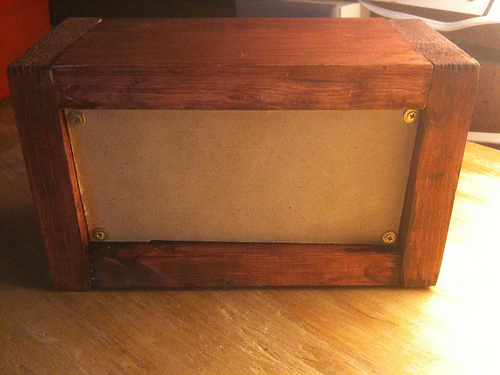

Day 1
After finishing up the Weird Sound Generator, I decided to pick up a few more circuit skills. The Atari Punk Console seems appropriate. It is a very simple tone square wave generator designed mostly by Forrest Mims and adapted later with a line-level output.
I am working mostly from the plans here: http://www.robthefiddler.com/electronics-audio-diy/circuit-experiments/atari-punk-console/ and various other electronics and synth people blogs.
This differs from the Weird Sound Generator in a few ways:
- The information I have is more vast but way more distributed. Thankfully I don't need very much because
- This project is MUCH simpler. After staring at one for a while, I understand how 555s work thanks to using them for several things in my learning with Make: Electronics.
- However, I will have to design and etch my own PCB for this project. That last one is the real reason for doing this. I have another project coming up that's going to require that I make my own PCBs. While several places have Atari Punk Console PCBs for sale for very reasonable prices, I would have had to forego the excellent learning opportunity to learn Cadsoft's EAGLE package.
All the parts from Jameco set me back about $12. Here is my order worksheet. This is assuming you have a collection of cheap electrolytic and ceramic capacitors and resistors from China. Also some nice thin wire (I use 22 awg) for the panel work. Otherwise, you will need to get those as well. I ordered with it a bunch of other stuff to save on shipping. Because the parts are so light, you want to get as much as possible together.
It wouldn't be me if I didn't forget a few parts. I didn't actually order the knobs or the power switch, so I had to kick them up from somewhere. I still haven't found knobs, but they're a luxury anyway. I'm sure I'll pick some up on my next order.
I picked up a bunch of 4"x6" copper clad sheets from eBay for etching for about $10. This phenomenal Instructable shows you how to use muriatic acid and hydrogen peroxide to etch copper without using ferric chloride. That's what I'll be trying first when I get to that step.
So here is the circuit I have printed out to refer to.
I decided to breadboard this out since it's so simple. That way I can test my parts and ensure my circuit diagram is good. Plus I really don't want to build my first PCB and have the whole thing fail for some reason that I could have caught in testing.
So here's my parts laid out. I use this 6-section storage box when I'm working on things to help me keep it organized and allow me to neatly put it away when I get sick of it.
I built myself a mock front panel from a piece of cardboard so I'd have something to wire a breadboard to.
Here's the circuit fully wired up. It only took about 15 minutes. And I got satisfying screeches out of it. And other horrible noises on account of the pots not being grounded, because cardboard is a terrible conductor.
Day 2
This "day 2" is really just a catchup of 10-15 minute sessions I've put into this since Christmas or so.
After breadboarding the circuit, the next step is to design and etch a printed circuit board (PCB) for it. CadSoft EAGLE is the obvious choice among hobbyists, and I was happy to learn it.
I used a lot of resources to get an idea of what I'm doing. I'm not very good at it, but I'm definitely good enough for this project. This is what I referred to:
- http://www.instructables.com/id/Turn-your-EAGLE-schematic-into-a-PCB/
- http://www.instructables.com/id/Make-hobbyist-PCBs-with-professional-CAD-tools-by-/
- http://www.youtube.com/watch?v=qG0O9LKH-_E One thing that I would note is that I had to print out large versions of my circuit and then compare them to a reference schematic to make sure I did things right. More care in the schematic-design part of EAGLE would have helped some.
After a couple iterations, I think I have the circuit correct now. On to cutting up my PCB. Here, I have scored it with a hobby knife. I'm not sure what to do next, suggestions for cutting PCBs abound. I'll need some tools, for sure.
Day 3
This morning was etching morning, at long last. I had to buy a bunch of materials, but etching is one of those kinds of things where you spend $50 on supplies and you'll have more than you'll ever need.
At first, I was going to try the Ferric Chloride etchants, but they wear out and proper disposal is a huge problem. Ultimately, I went with the hydrochloric (muriatic) acid + hydrogen peroxide reusable stuff recommended in this instructable and this hackaday article.
I had never etched anything before so I was very careful to follow steps and maybe overkilled it a little bit.
First, I had to cut my board down to size. There are lots of suggestions for what the proper tool for cutting copper clad board is. In my case, I went with tin-snips. They worked better than I thought they would, and they'll take a long time to wear out.
I cut a couple of these 2x2 squares out of my 4x6 sheet.
After this, you have to print the circuit on some kind of paper. I went with some paper from a cheap catalog. Some suggest that you should use only white paper with black print because the ink can be a problem. I tried an almost solid black sheet and it worked out ok, but I did get more ink on the board. The etchant took care of it. The white paper worked fine also. I was concerned that the ink may be a problem. Ultimately, I found that this is much easier than you would expect and that it is not at all rocket science.
At this point, you just cut it to fit and throw it under an iron on high for about 5 minutes like the instructable says. Then I put it in water for about 10 minutes, and it peel right off, leaving the toner on the copper. It's that easy.
After that, you mix up the muriatic acid (1 part) to the hydrogen peroxide (2 parts) and stick it in a tub. I did it outside. You'll want to wear gloves, and while it's going, I brushed it down with one of those cheap foam paintbrushes. The copper starts turning brown and the etchant starts turning green, and eventually, all the copper is gone!
Then it's just a matter of rinsing the board off in water.
And, once the acid is all gone, you can wipe off the toner with acetone.
And that's it! You can dump the etchant into a non-metallic bottle and reuse it over and over again. Be careful around metal!
Day 4
I bought a great set of #66 drill bits from Drill Bit City for about $13. I used a friend's drill press to drill my PCB out, and though I missed some holes, I believe the board will still work.

I also got the components stuffed into it. There are 6, so this is not exactly a challenge.

Onward to the case. I'm essentially using the same pattern as I used to build my Weird Sound Generator case, and this one will match its height so I can use some leftover steel stock. I made the mechanical layout for the case so far.
Day 5
So I got around to cutting out a new faceplate. I used some of my leftover steel sheet from the Weird Sound Generator. And almost all of the elements from that faceplate.
First, I cut out a 3x6 hunk of steel:
Then, I attached my mechanical diagram to it with masking tape, and punched all the center dots with a concrete screw and hammer. Then I drilled it out.
Test fit stuff.
Cleaned up the mechanical diagram to turn it into the actual faceplate. Added labels and such.
The great thing about the nuts that are going to hold on my switches, pots, and jacks is that they'll cover up all of these horrible mistakes.
Sending this with my wife to laminate tomorrow. Hopefully I'll get it glued on this weekend and get a chance to start on the case.
Day 6
I'm still waiting on getting my panel cover laminated. So while I wait on that, I decided to get some of the case stuff done.
I made a mounting tab for the board out of a PCI slot cover. I'm going to mount this to the back of the front panel and hopefully that'll clean up a bit of the wiring.
Mounted here, with JB Weld
The case pieces are cut out here. I don't have as much allowance as I did on the Weird Sound Generator, so I may be filing down the sides of my front panel to get this to fit.
Day 7
Got the faceplate cover laminated.
Here it is, glued on.
All wired up here. Initially, I had planned to make this really neat and organized. That fell apart. Also note that when I was gluing the faceplate on, I managed to break my board-holding bracket off.
Here is a front view. I need to pick up some knobs for it.
The good news is that this actually worked on the first try. The bad news is I'm pretty sure all my pots are wired backwards.
Atari Punk Console Sample by chamblin
Day 8
Debugging detour.
As I mentioned in my previous post, all my pots were wired backwards. Also, my volume wasn't doing anything really.
So I've spent a few hours tearing this apart and clipping and moving connections around with test leads, and I've come to the conclusion that I am missing some electronics fundamentals somewhere.
Ultimately, I switched the pots to the other pole. For the volume, I ended up shunting between the low side of the output and ground. The result is that there are about 10 degrees of "quiet volume" and the rest of the pot is "loud volume." What in particular causes this eludes me but something must be leaking to the plate. Whatever that something is, it has bested my multimeter and my effort, so I'm just settling for this as it is now.
If you are following along at home, you may need to try some totally different pot. I don't have much variety and my 2Ks weren't doing it, either.
This weekend I'll try assembling the case so I can move on with my life.
Day 9
So I'm assembling the case over this weekend. Pilot holes drilled in my pieces, screwed together haphazardly.
It didn't really fit at first, but there was a tiny bit of overlay from the faceplate cover and I shaved it off. Now the plate fits with no filing or other big hassles.
I cut my posts out of 1/2" square rod and attached them with wood glue. The top ones were clamped in to dry.
I stained it (poorly) and attached the APC itself with some screws.
Once again, I don't have a proper back for this thing, so I'm just going to go without one for the time being. Also, I don't have screws small enough to hold the battery holder in place, so that's also being foregone. The back is something I'll go without for a while as I won't have any need for paneling. The battery screws I might pick up next time I'm at the hardware store, but neither is really necessary. In other words, I'm marking this one in the "done" column.
Day 10
I rewired the volume control and finally got it working.
Also, a back. We can put this one in the done column now.
